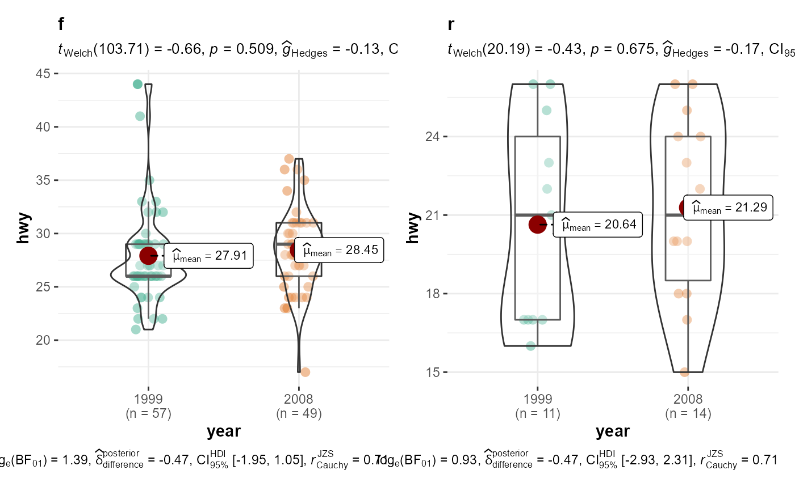

grouped_ggbetweenstats.RdA combined plot of comparison plot created for levels of a grouping variable.
grouped_ggbetweenstats(grouping.var, title.prefix = "Group", data = NULL, x, y, plot.type = "boxviolin", type = "parametric", effsize.type = "unbiased", xlab = NULL, ylab = NULL, caption = NULL, k = 3, var.equal = FALSE, nboot = 100, tr = 0.1, conf.level = 0.95, conf.type = "norm", notch = FALSE, notchwidth = 0.5, linetype = "solid", outlier.tagging = NULL, outlier.label = NULL, outlier.label.color = "black", outlier.color = "black", outlier.coef = 1.5, mean.plotting = TRUE, mean.size = 5, mean.color = "darkred", point.jitter.width = NULL, point.jitter.height = 0.2, point.dodge.width = 0.75, ggtheme = ggplot2::theme_bw(), palette = "Dark2", messages = TRUE, ...)
| grouping.var | Grouping variable. |
|---|---|
| title.prefix | Character specifying the prefix text for the fixed plot
title (name of each factor level) (Default: |
| data | Dataframe from which variables specified are preferentially to be taken. |
| x | The grouping variable. |
| y | The response - a vector of length the number of rows of |
| plot.type | Character describing the type of plot. Currently supported
plots are |
| type | Type of statistic expected ( |
| effsize.type | Type of effect size needed for parametric tests
( |
| xlab | Label for |
| ylab | Label for |
| caption | The text for the plot caption. |
| k | Number of decimal places expected for results. |
| var.equal | A logical variable indicating whether to treat the two
variances as being equal (Default: |
| nboot | Number of bootstrap samples for computing effect size (Default:
|
| tr | Trim level for the mean when carrying out |
| conf.level | Scalar between 0 and 1. If |
| conf.type | A vector of character strings representing the type of
intervals required. The value should be any subset of the values |
| notch | A logical. If |
| notchwidth | For a notched box plot, width of the notch relative to the
body (default |
| linetype | Character strings ( |
| outlier.tagging | Decides whether outliers should be tagged (Default:
|
| outlier.label | Label to put on the outliers that have been tagged. |
| outlier.label.color | Color for the label to to put on the outliers that
have been tagged (Default: |
| outlier.color | Default aesthetics for outliers (Default: |
| outlier.coef | Coefficient for outlier detection using Tukey's method.
With Tukey's method, outliers are below (1st Quartile) or above (3rd
Quartile) |
| mean.plotting | Decides whether mean is to be highlighted and its value
to be displayed (Default: |
| mean.size | Point size for the data point corresponding to mean
(Default: |
| mean.color | Color for the data point corresponding to mean (Default:
|
| point.jitter.width | Numeric specifying the degree of jitter in |
| point.jitter.height | Numeric specifying the degree of jitter in |
| point.dodge.width | Numeric specifying the amount to dodge in the |
| ggtheme | A function, |
| palette | If a character string (e.g., |
| messages | Decides whether messages references, notes, and warnings are
to be displayed (Default: |
| ... | Arguments passed on to
|
https://indrajeetpatil.github.io/ggstatsplot/articles/ggbetweenstats.html
# to get reproducible results from bootstrapping set.seed(123) # the most basic function call ggstatsplot::grouped_ggbetweenstats( data = mtcars, x = cyl, y = wt, grouping.var = am )#> Warning: aesthetic `x` was not a factor; converting it to factor#>#> Reference: Welch's ANOVA is used as a default. (Delacre, Leys, Mora, & Lakens, PsyArXiv, 2018).#>#> Note: Shapiro-Wilk Normality Test for wt : p-value = 0.003#>#> Note: Bartlett's test for homogeneity of variances for factor cyl : p-value = 0.022#>#> Warning: aesthetic `x` was not a factor; converting it to factor#>#> Reference: Welch's ANOVA is used as a default. (Delacre, Leys, Mora, & Lakens, PsyArXiv, 2018).#>#> Note: Shapiro-Wilk Normality Test for wt : p-value = 0.909#>#> Note: Bartlett's test for homogeneity of variances for factor cyl : p-value = 0.337#>